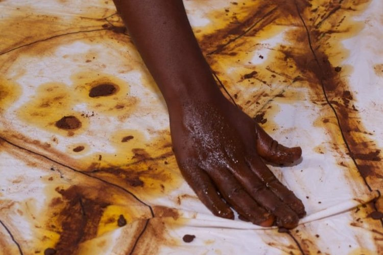

13 SEPT - 1 NOV
[MIÉRCOLES 19:30 - 20:30] Espacio Afro
[MIÉRCOLES 19:30 - 20:30] Espacio Afro
AFROZUMBA CON CARLOS SÁNCHEZ PALACIOS
Actividad de baile deportivo super divertida que combina géneros musicales tropicales y algunos ritmos africanos, tanto modernos con el afrobeat y algunos más tradicionales como el sofa o el Djole. La actividad tiene una duración de 60 minutos y consta de coreografías sencillas de los diferentes estilos guiadas por el instructor.
10€
Reservar
13 SEPT - 15 NOV
[MIÉRCOLES 10:30 - 21:30] Espacio Afro
[MIÉRCOLES 10:30 - 21:30] Espacio Afro
Clases de Kizomba con Yuri Garrido
Clases de Kizomba que imparte Yuri Garrido, angoleño, profesor internacional con años de experiencia en Kizomba y Semba.
12€
Reservar
22 SEPT
[19:30 - 21:00] Espacio Afro
[19:30 - 21:00] Espacio Afro

Performance 'O som das Mortas' de Yola Balagan
Es una performance que retrata la muerte de cuerpos/mujeres negros provocada en muchos casos por la violencia de género, feminicidios, machismos, pero también es una reflexión sobre la educación que nos enseña defensa personal y sentirnos bien con nuestro propio cuerpo.
Taquilla inversa
Añadir al calendario
23 SEPT
[19:30 - 22:00] Espacio Afro
[19:30 - 22:00] Espacio Afro
Bocafloja: Restrospectiva fílmica, racionalidad y tercer cinema
Bocafloja es un artista interdisciplinario que navega enre la música, el cine documental, el spoken word y la fotografía como medios de producción creativa y de conocimiento. Su cuerpo de trabajo parte del análisis crítico del Sur Global, la Teoría Crítica sobre Raza, la Colonialidad y los estudios de la Diáspora.
GRATIS
Añadir al calendario
14-15 OCT
La Casa Encendida

FESTIVAL CONCIENCIA AFRO 2023
El Festival Conciencia Afro 2023 es un espacio para el encuentro, la afectividad y el pensamiento de la comunidad afro en España. Este año en colaboración con La Casa Encendida, que aúna política, estética, música, emprendimiento y pedagogía y en el que las personas protagonistas y organizadoras son parte de la propia comunidad residente en el contexto español.
GRATIS
Añadir al calendario